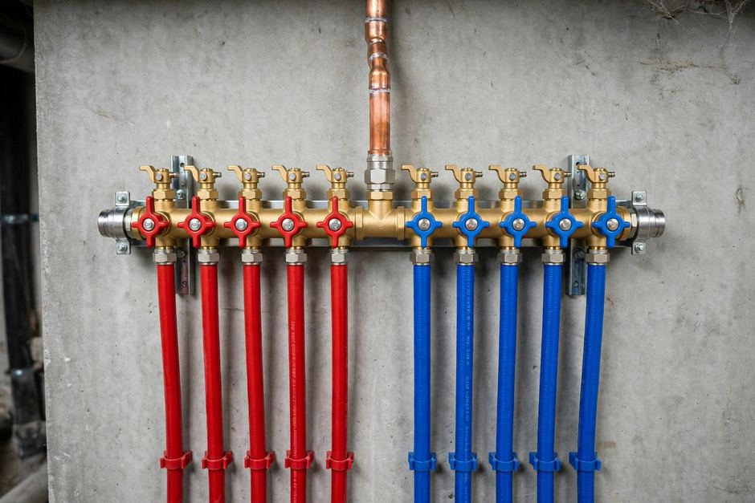
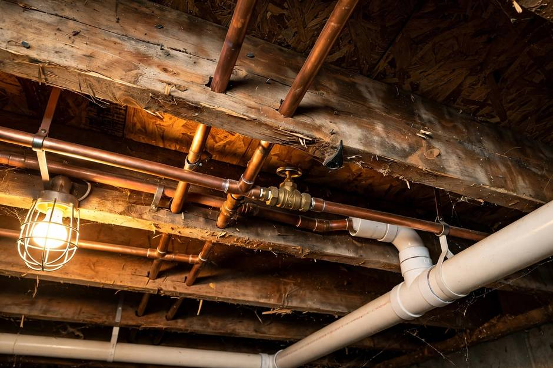
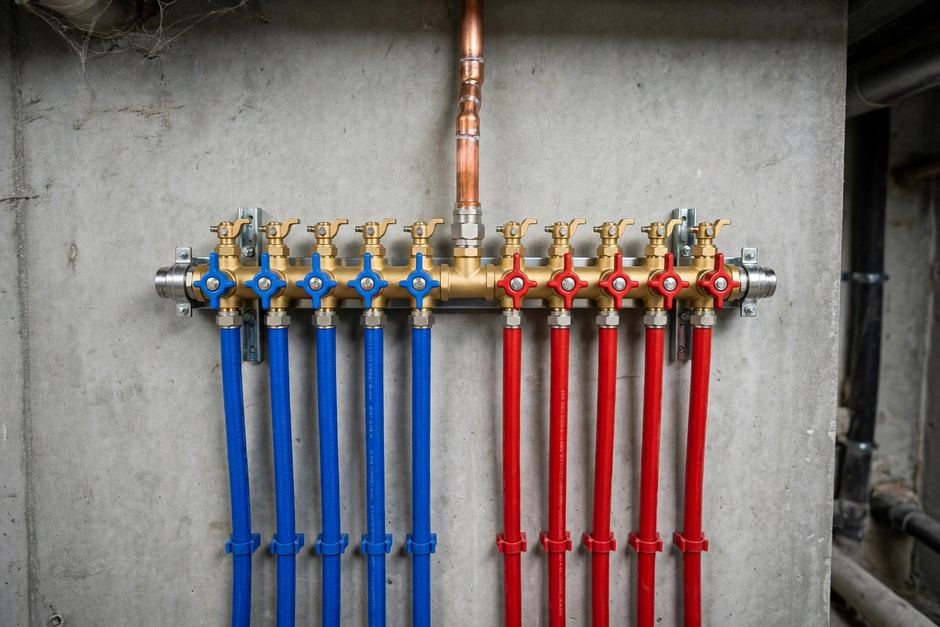

Whole-House Repiping
Repiping Belleville IL: Whole-House Pipe Replacement
Whole-house repiping replaces the water supply pipes inside a home, from the service entry to the fixtures throughout the house. In Belleville, IL, older homes may still have galvanized steel or cast iron pipe that shows age through discolored water, reduced flow, or repeated leaks. A repipe addresses the system as a whole, rather than one section at a time.
Based in Belleville, IL1610 W Main St, Belleville, IL 62220Monday through Friday, 8:00 AM to 4:30 PM. Closed Saturday and Sunday.
Scope of Work
What Whole-House Repiping Includes
A repipe covers the interior supply system. It is distinct from replacement of the underground line from the street to the house, which is covered on the main water line replacement page. The scope below describes what is reviewed and included when the interior system is replaced.
Interior Supply Pipe Replacement
Replacement of the hot and cold supply pipes serving fixtures throughout the home, including runs in basements, crawl spaces, and wall cavities where the existing layout allows access.
Fixture Connections and Shutoffs
New connections at sinks, toilets, tubs, showers, and laundry outlets, with shutoff valves checked at each fixture so individual fixtures can be isolated for later service work.
Water Heater Connections
Supply connections at the water heater are reviewed as part of the repipe, including the lines serving the unit and the valves that allow the heater to be isolated from the rest of the system.
Pipe Routing and Access Planning
Routing is planned around the existing structure, using accessible paths where possible and noting where wall or ceiling openings may be needed for pipe runs that cannot follow the original layout.
Testing and Restoration Discussion
After installation, the system is checked for leaks at joints and connections, and the scope of wall and ceiling restoration is discussed so the homeowner understands what follows the pipe work.
Permit Review Before Work Begins
The City of Belleville requires a permit before plumbing work begins (§152.05(A)); direct replacement of a toilet, sink, faucet, or other appliance is exempt, except hot water heaters require an electrical or gas permit (§152.05(B)(3)).
About Hinkle Plumbing Company
A Belleville Plumbing Company for Repiping Work
Hinkle Plumbing Company is based in Belleville, IL, and serves homeowners considering a whole-house repipe. The discussion starts with the condition of the existing pipes and the layout of the home, so the scope reflects what is actually present.
Repiping is a planned project, and older pipe is assessed before any scope is settled. In homes built in earlier decades, galvanized steel supply pipe and cast iron drain pipe are materials to check, along with signs such as discolored water, reduced flow at fixtures, and leaks that return in different places. The layout of the home, fixture count, and access to pipe runs all shape the plan. Hinkle Plumbing Company is located at 1610 W Main St, Belleville, IL 62220, and can be reached at (618) 677-6556.

How we workInterior supply pipes in a Belleville home, showing pipe routing and fixture connections.
How a Repipe Proceeds
The Repiping Process, Step by Step
The steps flex with the condition of the job, but the sequence stays the same.
Initial Discussion
The homeowner describes the signs that led to the call, such as discolored water, reduced flow, or repeated leaks, and the age and material of the existing pipe are discussed.
On-Site Assessment
Accessible pipe is inspected for material, condition, and signs of corrosion or past repair, and the layout of fixtures, access points, and the service entry is noted for planning.
Scope and Material Discussion
The proposed scope, pipe material, routing, and access needs are reviewed with the homeowner, along with permit needs and the restoration work that may follow the pipe installation.
Installation
Existing supply pipes are replaced section by section, with new runs installed along the planned routes and connections made at fixtures, appliances, and the water heater as the work proceeds.
Checks and Handover
Joints and connections are checked for leaks, fixtures are run to confirm flow, and the homeowner is shown the shutoff locations and the work that was completed.
Materials and Approaches
Pipe Materials and Repiping Approaches
Material choice depends on the layout of the home, water conditions, and access. A single leak is a different matter from a system-wide repipe, and is covered on the leak repair page. The approaches below describe how a full repipe is commonly planned.
PEX Supply Pipe
Flexible plastic pipe that can follow longer runs with fewer joints, which can reduce the number of openings needed in walls and ceilings where the layout allows continuous runs.
Copper Supply Pipe
Rigid metal pipe with a long history of use in homes, joined by fittings at each change of direction. Copper suits layouts where straight runs and accessible joints fit the structure of the home.
Mixed Material Replacement
In some homes, the existing system already contains more than one material from earlier partial work. The repipe plan notes what is present and how the new pipe connects with what remains.
Manifold Layouts
A central manifold can serve individual fixture runs, so each fixture has a dedicated line and its own shutoff at the manifold. This layout suits homes where a central location is accessible.
Trunk and Branch Layouts
A main trunk line serves branch lines to groups of fixtures, following the pattern of many existing systems. This layout can suit homes where the original routing remains accessible.
Drain Pipe Considerations
A repipe addresses supply pipe. Cast iron or clay drain pipe is noted during assessment where it is visible, and drain concerns are discussed separately so supply and drain scopes stay distinct.
Common Situations
When Homeowners Consider Repiping
The patterns below describe situations that commonly lead homeowners to ask about a repipe. For other repair work, see the plumbing repairs page. Each home is assessed on its own pipe condition and layout.

Discolored Water and Repeated Leaks
A common call comes from a homeowner who notices discolored water and reduced flow at more than one fixture. The home has galvanized steel supply pipe from an earlier era, and leaks have appeared in different places over time. Rather than addressing each leak on its own, the homeowner asks whether replacing the supply system as a whole would address the pattern. The assessment looks at pipe material, fixture layout, and access to the runs.
Repiping During Renovation Work
A common call comes from a homeowner planning renovation work who wants the supply pipe addressed while walls are already open. The existing pipe includes a mix of materials from earlier partial work, and the layout no longer matches how the fixtures are arranged. The repipe is discussed alongside the renovation plan, so routing, fixture positions, and access are settled together. The work is scoped from the layout of the home and the condition of the pipe that is visible during assessment.
Signs to Check
Problems That Point Toward a Repipe
Most calls fall into a few patterns. Knowing which pattern applies decides what the visit involves.
Discolored Water at Fixtures
Water that runs discolored when a fixture is first used can indicate corrosion inside older galvanized steel pipe. The pattern is checked across fixtures to see whether it affects the system or a single run.
Reduced Flow at Multiple Fixtures
Flow that has weakened at several fixtures can indicate narrowing inside older supply pipe from scale and corrosion. Fixture-by-fixture checks help separate a single fixture issue from a system-wide pattern.
Leaks in Different Places
Leaks that appear in one place, then another, can indicate that the supply system as a whole is reaching the end of its serviceable life. Each new leak is checked against the material and condition of the surrounding pipe.
Galvanized or Cast Iron Pipe
Homes from earlier eras may still have galvanized steel supply pipe or cast iron drain pipe. Pipe material is checked during assessment, along with visible corrosion, past repairs, and mixed materials from earlier partial work.
Cost Factors
What Shapes the Cost of a Repipe
Cost depends on scope, material, and access. Call (618) 677-6556 to discuss the layout of the home.
Size and Layout of the Home
The number of fixtures, the number of bathrooms and kitchens, and the length of pipe runs all shape scope. Larger layouts with more fixtures involve more pipe, more connections, and more access points.
Pipe Material and Routing
Material choice and the routing available in the structure affect scope. Accessible runs in basements and crawl spaces differ from runs that require wall or ceiling openings, and each layout is assessed on its own conditions.
Restoration and Permit Needs
Wall and ceiling restoration after pipe installation, along with permit needs under City of Belleville rules, form part of the overall scope. These items are discussed before work begins so the full scope is understood.
Reviews from Google
What Customers Say on Google
★★★★★
“Very prompt and responsive, the worker was friendly and informative! Will use this company again!”
★★★★★
“Don did an outstanding job for me when I needed him and highly recommend his business”
★★★★★
“Rated 5.0 out of 5 across 3 Google reviews, all five stars.”

How is repiping different from main water line replacement?
Repiping replaces the supply pipes inside the home, from the service entry to the fixtures. Main water line replacement addresses the underground line from the street to the house, which is a separate scope with its own conditions. Keeping the two scopes distinct helps the homeowner understand which part of the system is being discussed and what each project involves.
How can a homeowner tell if a home needs repiping?
Signs to check include discolored water, reduced flow at more than one fixture, and leaks appearing in different places. Pipe material matters as well: galvanized steel and cast iron in older homes are materials to check during assessment. A repipe is considered when the pattern points to the system as a whole, rather than a single fixture or a single section of pipe.
What affects the cost of repiping a home in Belleville?
Scope is shaped by the number of fixtures, the length of pipe runs, material choice, routing and access, and restoration work after installation. Permit needs under City of Belleville rules are also part of the discussion. Because each home differs in layout and pipe condition, cost is discussed after assessment. Call (618) 677-6556 to discuss the layout of the home.
Is a permit required for repiping in Belleville?
The City of Belleville requires a permit before plumbing work begins (§152.05(A)); direct replacement of a toilet, sink, faucet, or other appliance is exempt, except hot water heaters require an electrical or gas permit (§152.05(B)(3)). Permit needs for a specific repipe are reviewed before work begins, so the scope reflects the rules that apply to the project.
Related services
Other work we handle alongside a repipe

Leak Repair in Belleville, IL
Single leaks and hidden leaks, checked and repaired without replacing the whole supply system.
Main Water Line Replacement in Belleville, IL
The underground line from the street to the house, kept distinct from interior repiping work.
Plumbing Repairs in Belleville, IL
General repair work for fixtures, pipes, and fittings throughout the home in Belleville.Mon–Fri 8:00 AM–4:30 PM
Discuss a Repipe for a Belleville Home
Call Hinkle Plumbing Company at (618) 677-6556 to discuss the pipe material, layout, and scope of a repipe. Office hours are Monday through Friday, 8:00 AM to 4:30 PM. Closed Saturday and Sunday.

Talk with the local team
Request Repiping
Call (618) 677-6556 during office hours, Monday through Friday, 8:00 AM to 4:30 PM. Tell us what is happening and we will talk through the next step.